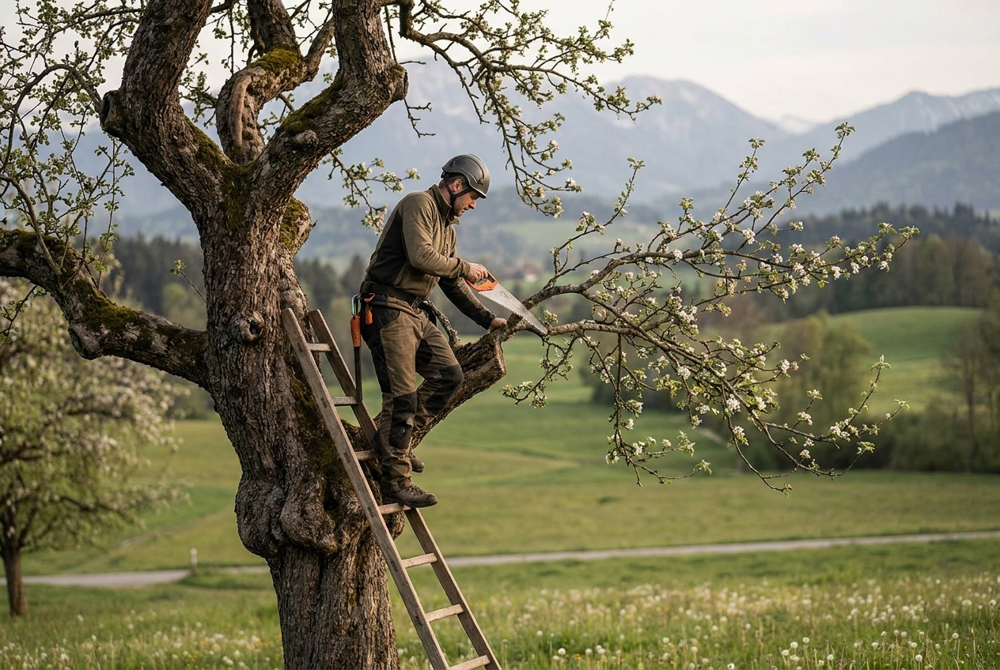
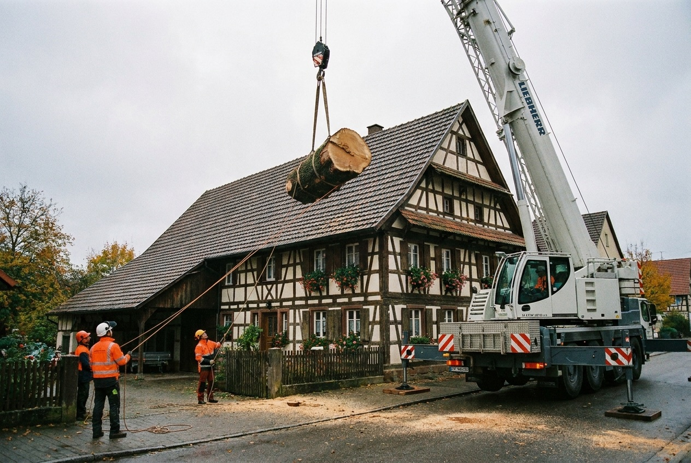
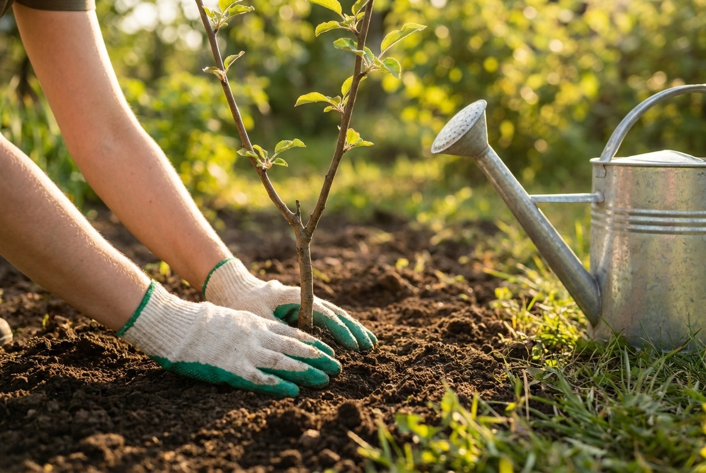
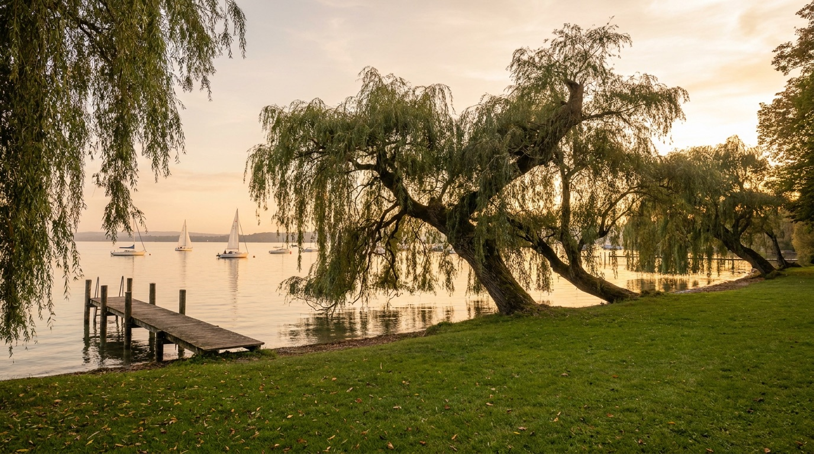

Ich bin Benedikt Gleissl, Baumpfleger aus Dießen am Ammersee. Seit 2014 kümmere ich mich mit meinem Team um Pflanzung, Pflege und Fällung von Bäumen im gesamten Fünfseenland – fachgerecht, sicher und mit Respekt vor jedem Baum.
Geboren in Starnberg, aufgewachsen am Ammersee: Bäume begleiten mich, seit ich denken kann. Schon mit 16 Jahren habe ich begonnen, Bäume zu schneiden – aus der Leidenschaft wurde ein Beruf.
Eigentlich bin ich Diplom-Betriebswirt. Doch die Liebe zu den Bäumen war stärker als der studierte Beruf: 2014 habe ich mich mit Fünfseenland Baumschnitt selbstständig gemacht. Heute kümmere ich mich mit meinem Team um Pflanzung, Pflege und Fällung von Bäumen – mit besonderer Expertise in der Sanierung und dem Erhalt alter Obstbäume sowie bei Kranfällungen.
Falsche Schnitte zeigen ihre Folgen oft erst nach 20 Jahren. Deshalb arbeite ich so, dass der Baum langfristig gesund bleibt – nicht nur bis zum nächsten Frühjahr.
„Bäume sind für mich Lebewesen."
— Benedikt Gleissl
Von der ersten Beratung über den fachgerechten Schnitt bis zur anspruchsvollen Kranfällung: Wir übernehmen jede Aufgabe mit derselben Sorgfalt.
Fachgerechter Schnitt für gesunde, verkehrssichere und schöne Bäume – vom Jungbaum bis zum alten Riesen.
Sichere Fällung auch an schwierigen Standorten – mit Seilklettertechnik oder Kran, stückweise und kontrolliert.
Unser Spezialgebiet: alte Apfel-, Birn- und Zwetschgenbäume behutsam sanieren und für viele weitere Jahrzehnte erhalten.
Regelmäßige Kontrolle auf Standsicherheit und Bruchgefahr – damit Ihr Baum keine Gefahr für Menschen und Gebäude wird.
Wo ein Baum weichen muss, pflanzen wir nach: standortgerechte Auswahl, fachgerechte Pflanzung und Anwuchspflege.
Kronensicherung, Baumschutz auf Baustellen und Sanierungsmaßnahmen, damit wertvolle Altbäume erhalten bleiben.



Bäume direkt am Wasser, mitten im öffentlichen Raum – das sind Aufgaben, die Erfahrung und Fingerspitzengefühl verlangen. Im Zuge der Sanierung der Dießener Seeanlagen hat unser Team im Auftrag der Gemeinde eine der großen alten Weiden am Mühlbachufer fachgerecht und sicher gefällt.
Bäume, die zur Gefahr werden, müssen weichen – aber nie ersatzlos: Neupflanzungen sorgen dafür, dass das Ortsbild und der Lebensraum erhalten bleiben.
Von Dießen aus betreuen wir private Gärten, Streuobstwiesen, Firmengelände und kommunale Anlagen rund um den Ammersee und im gesamten Fünfseenland.
Ob ein einzelner Obstbaum im Garten oder eine anspruchsvolle Fällung: Schreiben Sie mir kurz, worum es geht – ich melde mich zeitnah mit einer ehrlichen Einschätzung und einem fairen Angebot.